Chapter 2 Layers
Total points: 71
2.1 Introduction
In this chapter, you’ll expand on your ggplot2 foundation as you learn about the layered grammar of graphics. We’ll start with a deeper dive into aesthetic mappings, geometric objects, and facets. Then, you will learn about statistical transformations ggplot2 makes under the hood when creating a plot. These transformations are used to calculate new values to plot, such as the heights of bars in a bar plot or medians in a box plot. You will also learn about position adjustments, which modify how geoms are displayed in your plots.
We will not cover every single function and option for each of these layers, but we will walk you through the most important and commonly used functionality provided by ggplot2 as well as introduce you to packages that extend ggplot2.
2.2 Aesthetic mappings
The mpg data frame is bundled with the ggplot2 package and contains 234 observations on 38 car models.
# ?mpg
nrow(mpg)
## [1] 234
sapply(mpg, class)
## manufacturer model displ year cyl trans
## "character" "character" "numeric" "integer" "integer" "character"
## drv cty hwy fl class
## "character" "integer" "integer" "character" "character"Among the variables in mpg are:
displ: A car’s engine size, in liters. A numerical variable.hwy: A car’s fuel efficiency on the highway, in miles per gallon (mpg). A car with a low fuel efficiency consumes more fuel than a car with a high fuel efficiency when they travel the same distance. A numerical variable.class: Type of car. A categorical variable.
Let’s start by visualizing the relationship between displ and hwy for various classes of cars.
We can do this with a scatterplot where the numerical variables are mapped to the x and y aesthetics and the categorical variable is mapped to an aesthetic like color or shape
ggplot(mpg, aes(x = displ, y = hwy, color = class)) + geom_point() + ggplot(mpg,
aes(x = displ, y = hwy, shape = class)) + geom_point() + plot_layout(ncol = 2)![Two scatterplots next to each other, both visualizing highway fuel #| efficiency versus engine size of cars and showing a negative
association. In the plot on the left class is mapped to the color
aesthetic, resulting in different colors for each class.
In the plot on the right class is mapped the shape aesthetic,
resulting in different plotting character shapes for each class,
except for suv. Each plot comes with a legend that shows the
mapping between color or shape and levels of the class variable.](r4ds-ggplot2_files/figure-html/unnamed-chunk-50-1.png)
Note the use of plot_layout from the patchwork package to layout the plots in two rows.
You can also use mathematical symbols to layout ggplots:
Use + to plot them side-by-side:
ggplot(mpg, aes(x = displ, y = hwy, color = class)) + geom_point() + ggplot(mpg,
aes(x = displ, y = hwy, shape = class)) + geom_point()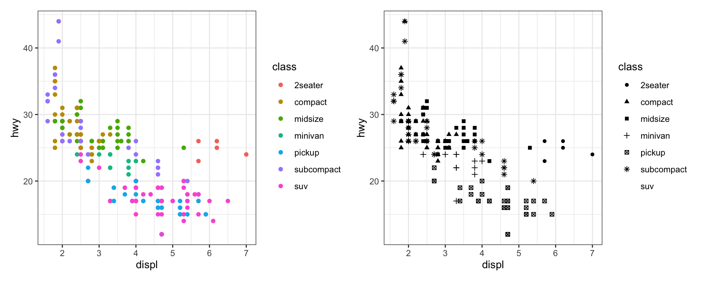
Use ‘/’ to plot them in one column:
(ggplot(mpg, aes(x = displ, y = hwy, color = class)) + geom_point())/(ggplot(mpg,
aes(x = displ, y = hwy, shape = class)) + geom_point())
Notice that parentheses are required for this operation unless you first save the plots:
p1 <- ggplot(mpg, aes(x = displ, y = hwy, color = class)) + geom_point()
p2 <- ggplot(mpg, aes(x = displ, y = hwy, shape = class)) + geom_point()
p1/p2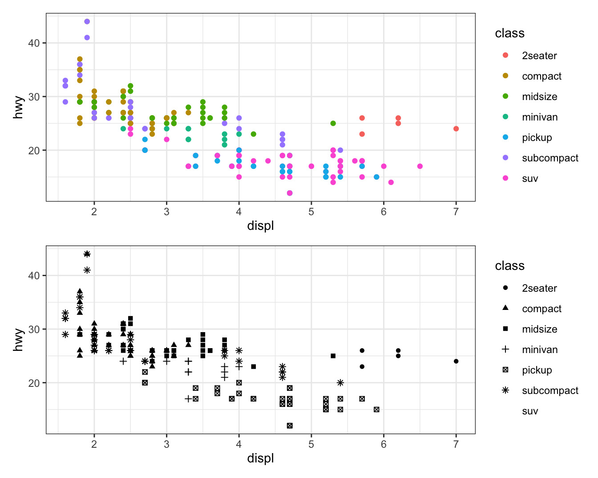
When class is mapped to shape, we get two warnings:
1: The shape palette can deal with a maximum of 6 discrete values because more than 6 becomes difficult to discriminate; you have 7. Consider specifying shapes manually if you must have them.
2: Removed 62 rows containing missing values (
geom_point()).
Since ggplot2 will only use six shapes at a time, by default, additional groups will go unplotted when you use the shape aesthetic.
The second warning is related – there are 62 SUVs in the dataset and they’re not plotted.
Similarly, we can map class to size or alpha aesthetics as well, which control the size and the transparency of the points, respectively.
# class mapped to size
ggplot(mpg, aes(x = displ, y = hwy, size = class)) + geom_point()
# class mapped to alpha
ggplot(mpg, aes(x = displ, y = hwy, alpha = class)) + geom_point()

Both of these produce warnings as well:
Using size for a discrete variable is not advised. Using alpha for a discrete variable is not advised.
Mapping an unordered discrete (categorical) variable (class) to an ordered aesthetic (size or alpha) is generally not a good idea because it implies a ranking that does not in fact exist.
Once you map an aesthetic, ggplot2 takes care of the rest.
It selects a reasonable scale to use with the aesthetic, and it constructs a legend that explains the mapping between levels and values.
For x and y aesthetics, ggplot2 does not create a legend, but it creates an axis line with tick marks and a label.
The axis line provides the same information as a legend; it explains the mapping between locations and values.
You can also set the visual properties of your geom manually as an argument of your geom function (outside of aes()) instead of relying on a variable mapping to determine the appearance.
For example, we can make all of the points in our plot blue:
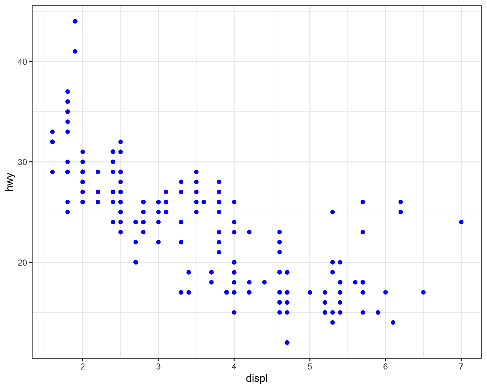
Here, the color doesn’t convey information about a variable, but only changes the appearance of the plot. You’ll need to pick a value that makes sense for that aesthetic:
- The name of a color as a character string, e.g.,
color = "blue" - The size of a point in mm, e.g.,
size = 1 - The shape of a point as a number, e.g,
shape = 1, as shown in 2.1.
![Mapping between shapes and the numbers that represent them: 0 - square,
1 - circle, 2 - triangle point up, 3 - plus, 4 - cross, 5 - diamond,
6 - triangle point down, 7 - square cross, 8 - star, 9 - diamond plus,
10 - circle plus, 11 - triangles up and down, 12 - square plus,
13 - circle cross, 14 - square and triangle down, 15 - filled square,
16 - filled circle, 17 - filled triangle point-up, 18 - filled diamond,
19 - solid circle, 20 - bullet (smaller circle), 21 - filled circle blue,
22 - filled square blue, 23 - filled diamond blue, 24 - filled triangle
point-up blue, 25 - filled triangle point down blue.](r4ds-ggplot2_files/figure-html/fig-shapes-1.png)
Figure 2.1: R has 25 built-in shapes that are identified by numbers. There are some
seeming duplicates: for example, 0, 15, and 22 are all squares. The
difference comes from the interaction of the color and fill
aesthetics. The hollow shapes (0–14) have a border determined by color;
the solid shapes (15–20) are filled with color; the filled shapes
(21–24) have a border of color and are filled with fill. Shapes are
arranged to keep similar shapes next to each other.
So far we have discussed aesthetics that we can map or set in a scatterplot, when using a point geom. You can learn more about all possible aesthetic mappings in the aesthetic specifications vignette at https://ggplot2.tidyverse.org/articles/ggplot2-specs.html.
The specific aesthetics you can use for a plot depend on the geom you use to represent the data. In the next section we dive deeper into geoms.
2.2.1 Exercises
- Create a scatterplot of
hwyvs.displwhere the points are pink filled in triangles. 2pts
- Why did the following code not result in a plot with blue points? 2pts
Ans-2.2.1.2:
# Color should be set outside of the aesthetic mapping. If you check what's
# going inside aes(), you find displ (your x variable), and hwy (your y
# variable). How does 'blue' fit in here? It actually doesn't. As 'blue' (a
# string) doesn't exist in your dataframe, it's not applied to your plot as a
# new coloring aesthetic. Instead, it will only be added to your legend (here
# 'blue' could have been any string).
ggplot(mpg) + geom_point(aes(x = displ, y = hwy), color = "blue")- What does the
strokeaesthetic do? What shapes does it work with? (Hint: use?geom_point) 2pts
Ans-2.2.1.3:
# Stroke controls the width of the edge/border of the points for shapes 21-24
# (filled circle, square, triangle, and diamond)
ggplot(mpg) + geom_point(aes(x = displ, y = hwy), shape = 24, fill = "red", color = "blue",
stroke = 1)
ggplot(mpg) + geom_point(aes(x = displ, y = hwy), shape = 21, fill = "purple", color = "red",
stroke = 2, size = 8)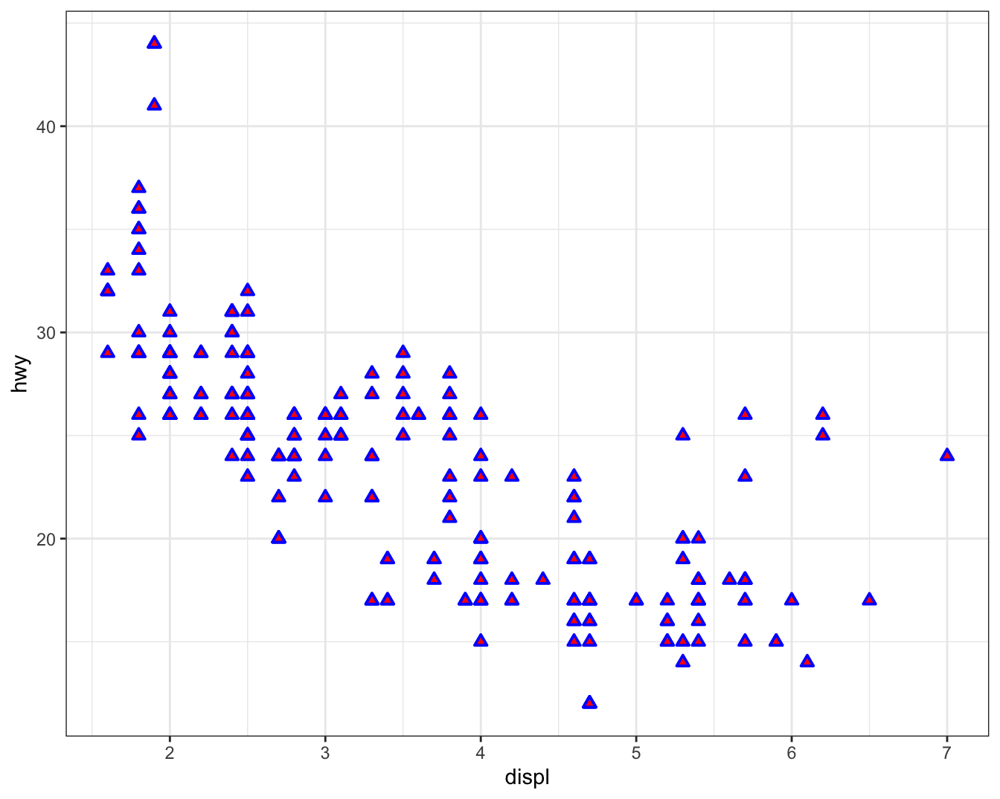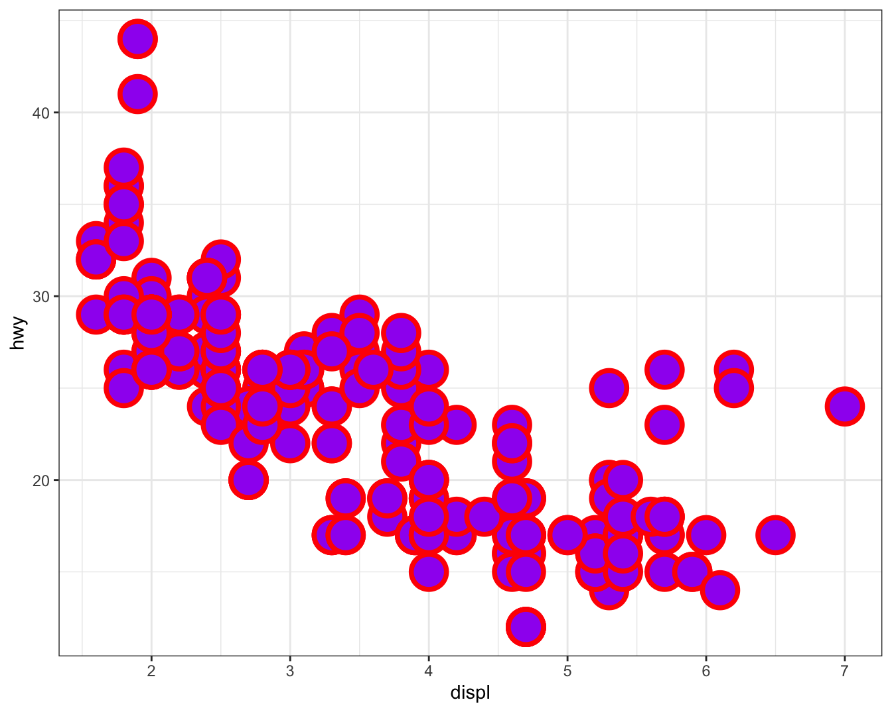
- What happens if you map an aesthetic to something other than a variable name, like
aes(color = displ < 5)? Try it by adding color to the following plot: 2pts
Ans-2.2.1.4:
# It creates a logical variable with values `TRUE` and `FALSE` for cars with
# displacement values below and above 5. In general, mapping an aesthetic to
# something other than a variable first evaluates that expression then maps the
# aesthetic to the outcome.
ggplot(mpg) + geom_point(aes(x = displ, y = hwy, color = displ < 5))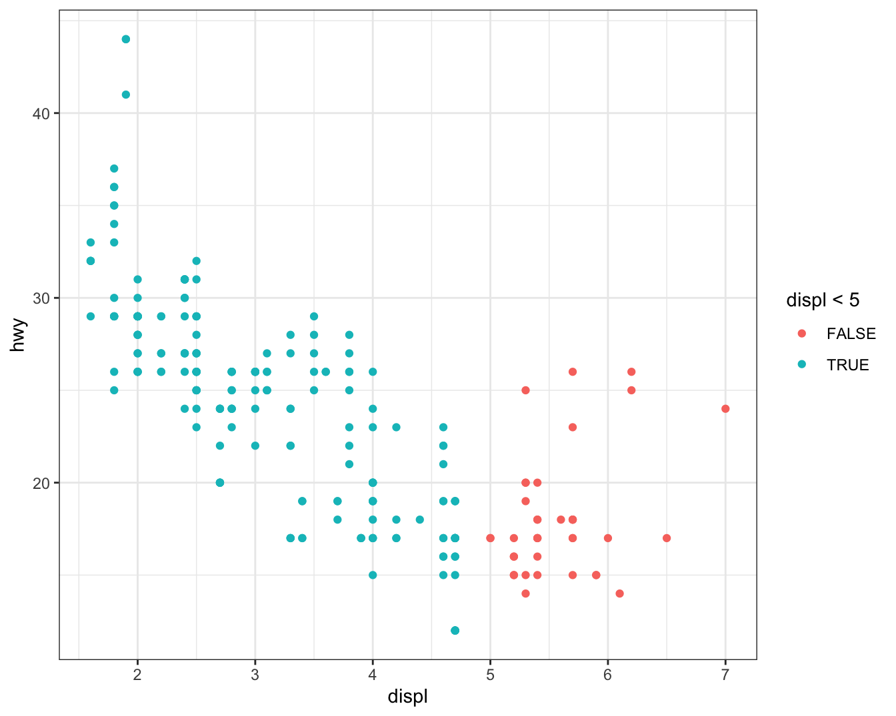
2.3 Geometric objects
How are these two plots similar?
ggplot(mpg, aes(x = displ, y = hwy)) + geom_point()
ggplot(mpg, aes(x = displ, y = hwy)) + geom_smooth()Both plots contain the same x variable, the same y variable, and both describe the same data.
But the plots are not identical.
Each plot uses a different geometric object, geom, to represent the data.
The first plot uses the point geom, and the plot on the second uses the smooth geom, a smooth line fitted to the data.
To change the geom in your plot, change the geom function that you add to ggplot().
For instance, to make the plots above, you can use the following code:
# point
ggplot(mpg, aes(x = displ, y = hwy)) + geom_point()
# smooth
ggplot(mpg, aes(x = displ, y = hwy)) + geom_smooth()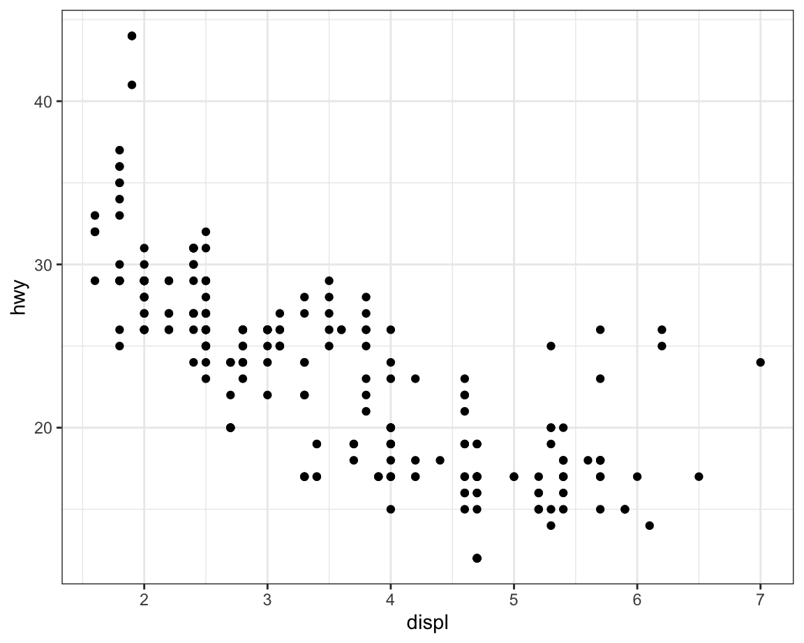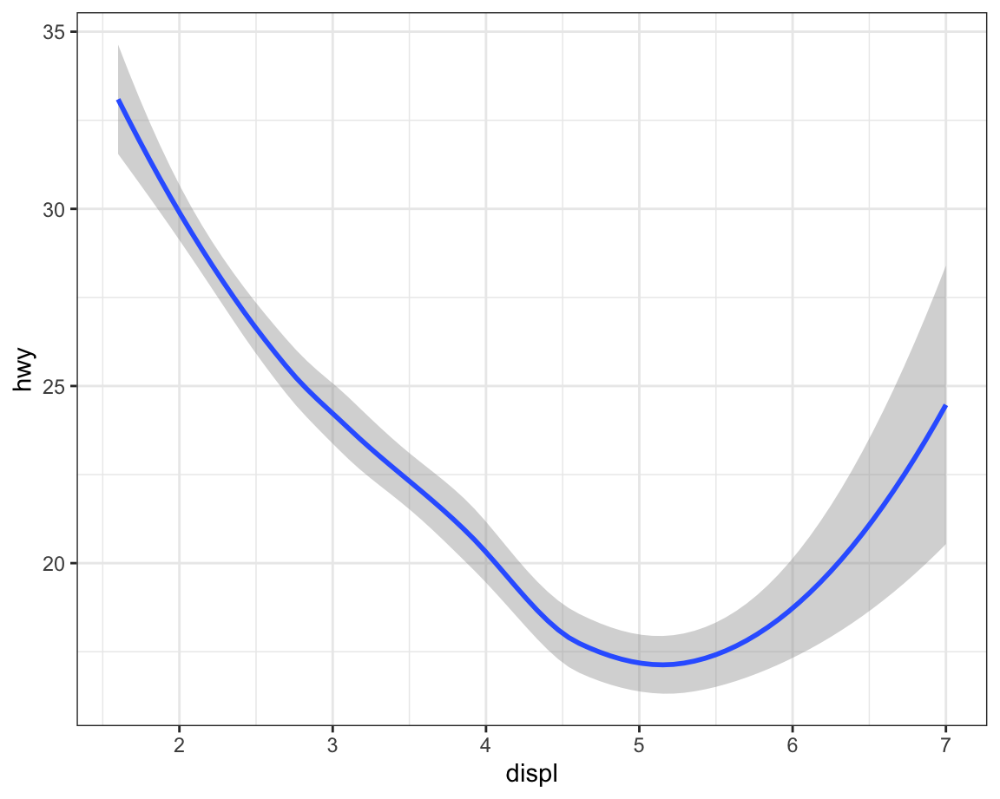
Every geom function in ggplot2 takes a mapping argument, either defined locally in the geom layer or globally in the ggplot() layer.
However, not every aesthetic works with every geom.
You could set the shape of a point, but you couldn’t set the “shape” of a line.
If you try, ggplot2 will silently ignore that aesthetic mapping.
On the other hand, you could set the linetype of a line.
geom_smooth() will draw a different line, with a different linetype, for each unique value of the variable that you map to linetype.
# Top
ggplot(mpg, aes(x = displ, y = hwy, shape = drv)) + geom_smooth()
# Bottom
ggplot(mpg, aes(x = displ, y = hwy, linetype = drv)) + geom_smooth()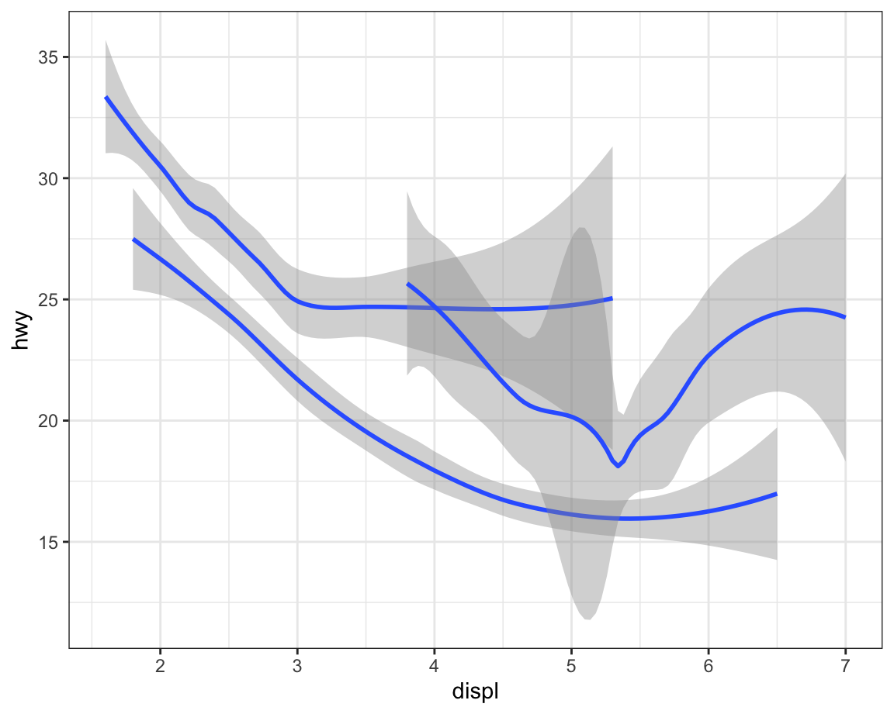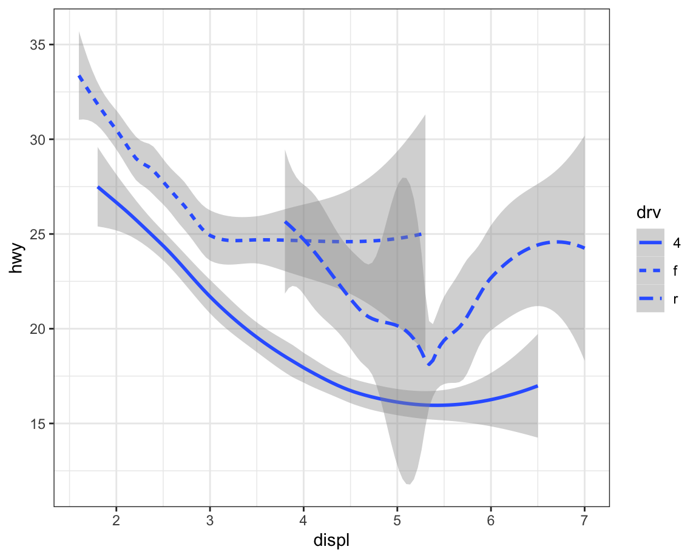
Here, geom_smooth() separates the cars into three lines based on their drv value, which describes a car’s drive train.
One line describes all of the points that have a 4 value, one line describes all of the points that have an f value, and one line describes all of the points that have an r value.
Here, 4 stands for four-wheel drive, f for front-wheel drive, and r for rear-wheel drive.
Notice there is no legend for the first plot because geometric smooth does not have a shape aesthetic.
If this sounds strange, we can make it clearer by overlaying the lines on top of the raw data and then coloring everything according to drv.
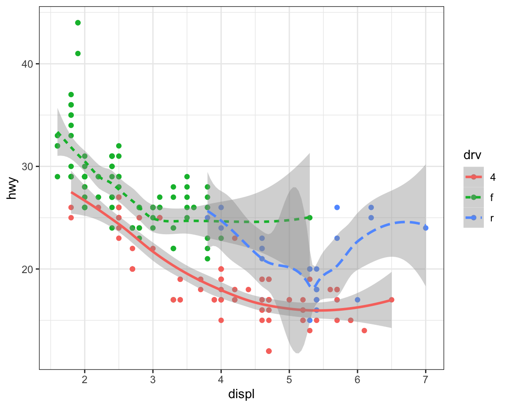
Notice that this plot contains two geoms in the same graph.
Many geoms, like geom_smooth(), use a single geometric object to display multiple rows of data.
For these geoms, you can set the group aesthetic to a categorical variable to draw multiple objects.
ggplot2 will draw a separate object for each unique value of the grouping variable.
In practice, ggplot2 will automatically group the data for these geoms whenever you map an aesthetic to a discrete variable (as in the linetype example).
It is convenient to rely on this feature because the group aesthetic by itself does not add a legend or distinguishing features to the geoms.
If you place mappings in a geom function, ggplot2 will treat them as local mappings for the layer. It will use these mappings to extend or overwrite the global mappings for that layer only. This makes it possible to display different aesthetics in different layers.
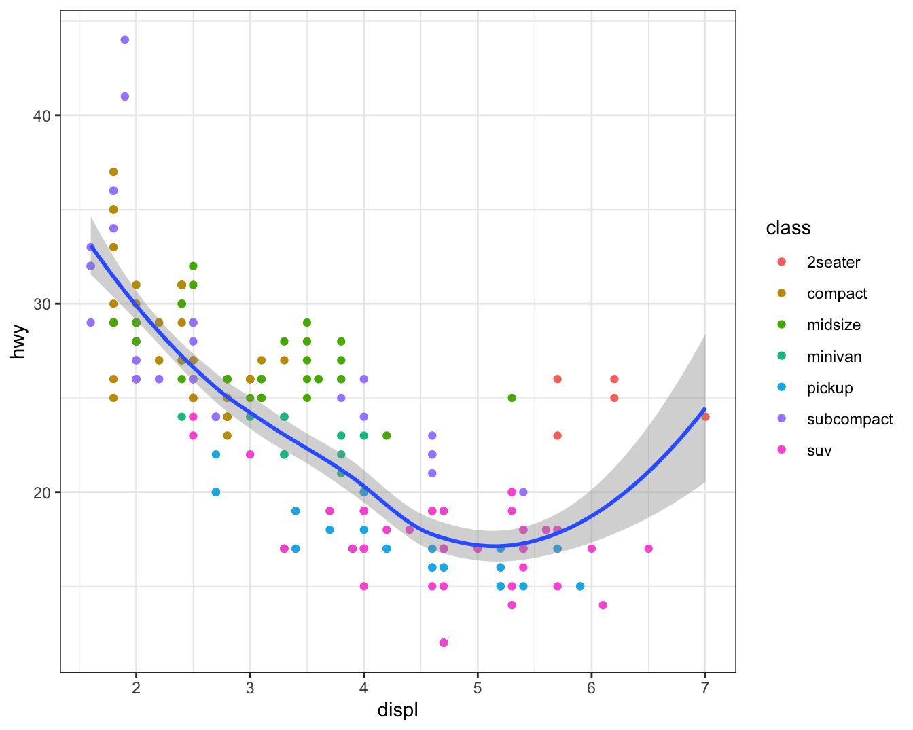
You can use the same idea to specify different data for each layer.
Here, we use red points as well as open circles to highlight two-seater cars.
The local data argument in geom_point() overrides the global data argument in ggplot() for that layer only.
g <- ggplot(mpg, aes(x = displ, y = hwy)) + geom_point() + geom_point(data = mpg %>%
filter(class == "2seater"), color = "red")
g + geom_point(data = mpg %>%
filter(class == "2seater"), shape = "circle open", size = 3, color = "red")
Geoms are the fundamental building blocks of ggplot2. You can completely transform the look of your plot by changing its geom, and different geoms can reveal different features of your data. For example, the histogram and density plot below reveal that the distribution of highway mileage is bimodal and right skewed while the boxplot reveals two potential outliers.
# histogram
ggplot(mpg, aes(x = hwy)) + geom_histogram(binwidth = 2)
# density
ggplot(mpg, aes(x = hwy)) + geom_density()
# boxplot
ggplot(mpg, aes(x = hwy)) + geom_boxplot()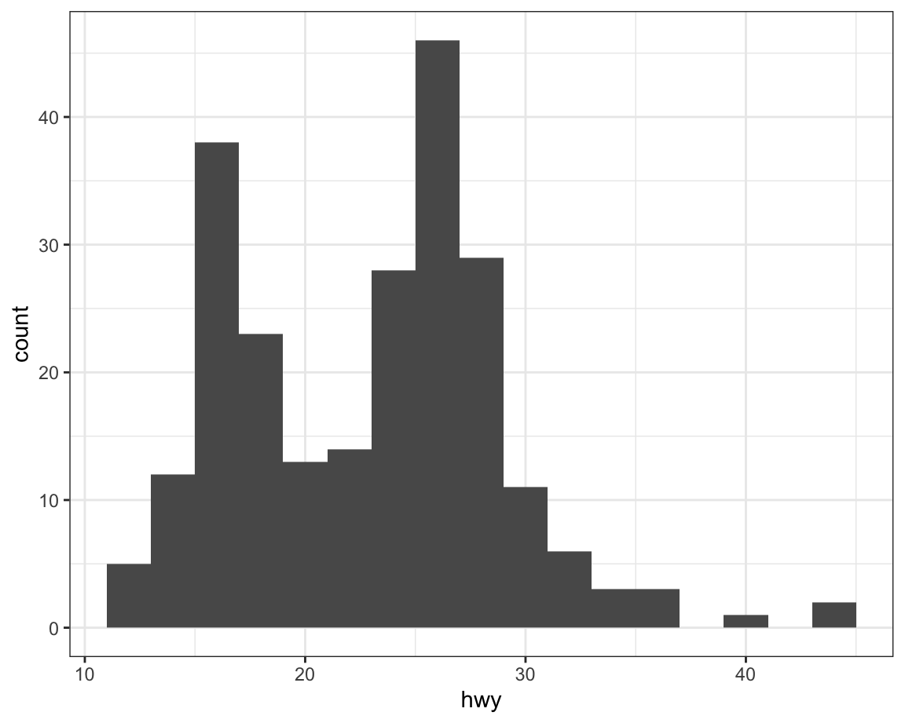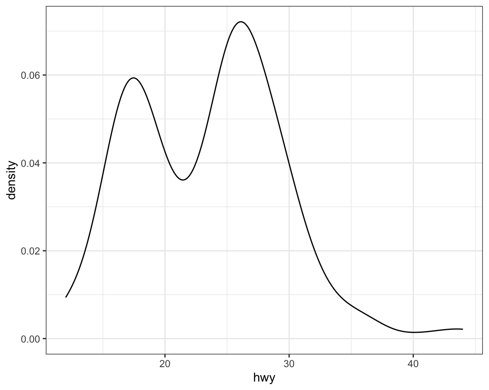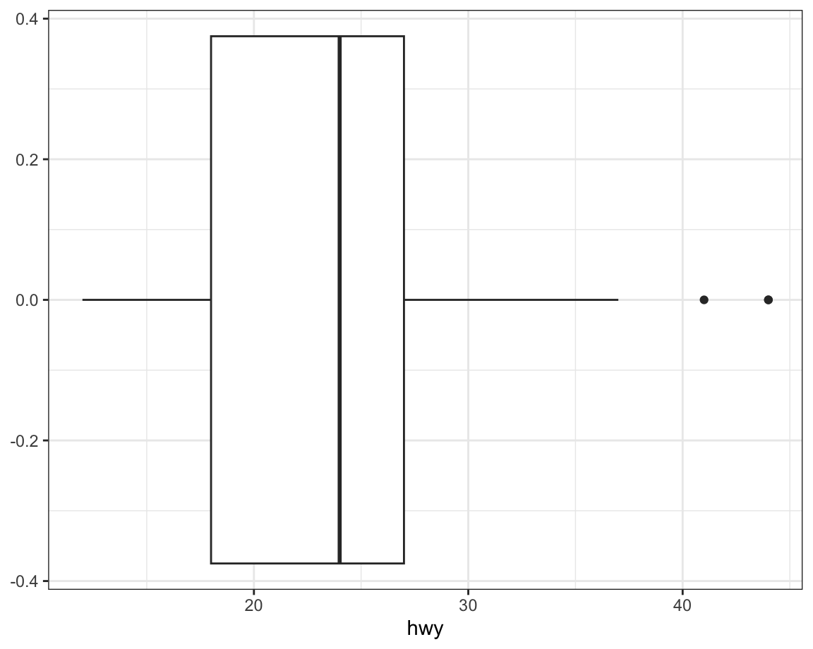
ggplot2 provides more than 40 geoms but these don’t cover all possible plots one could make. If you need a different geom, we recommend looking into extension packages first to see if someone else has already implemented it (see https://exts.ggplot2.tidyverse.org/gallery/ for a sampling).
For example, the ggridges package (https://wilkelab.org/ggridges) is useful for making ridgeline plots, which can be useful for visualizing the density of a numerical variable for different levels of a categorical variable.
In the following plot not only did we use a new geom (geom_density_ridges()), but we have also mapped the same variable to multiple aesthetics (drv to y, fill, and color) as well as set an aesthetic (alpha = 0.5) to make the density curves transparent.
library(ggridges)
ggplot(mpg, aes(x = hwy, y = drv, fill = drv, color = drv)) + geom_density_ridges(alpha = 0.5,
show.legend = FALSE)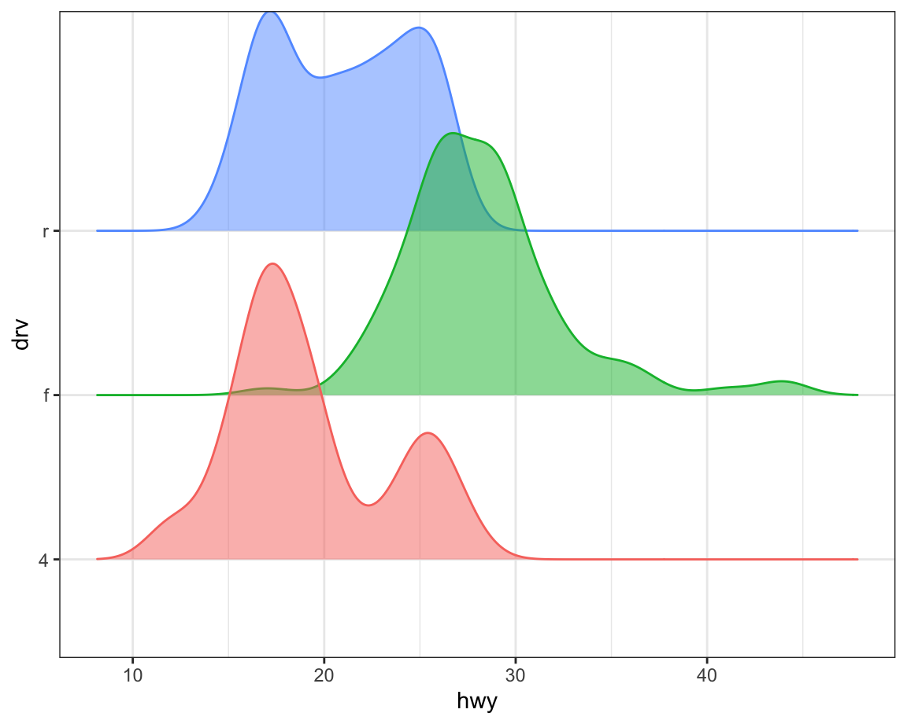
The best place to get a comprehensive overview of all of the geoms ggplot2 offers, as well as all functions in the package, is the reference page: https://ggplot2.tidyverse.org/reference.
To learn more about any single geom, use the help (e.g., ?geom_smooth).
2.3.1 Exercises
- What geom would you use to draw a line chart? A boxplot? A histogram? An area chart? 4pts
Ans-2.3.1.1a:
b) Use the following ggplot to create 4 plots, `geom_line()`, `geom_boxplot()`, `geom_point()` and `geom_area()`. Include a title specifying the geometry for each. 4ptsdf <- data.frame(x = c(3, 1, 5), y = c(2, 4, 6), label = c("a", "b", "c"))
p <- ggplot(df, aes(x, y, label = label))Ans-2.3.1.1b:
p + geom_line() + ggtitle("line")
p + geom_boxplot() + ggtitle("boxplot")
p + geom_point() + ggtitle("point")
p + geom_area() + ggtitle("area")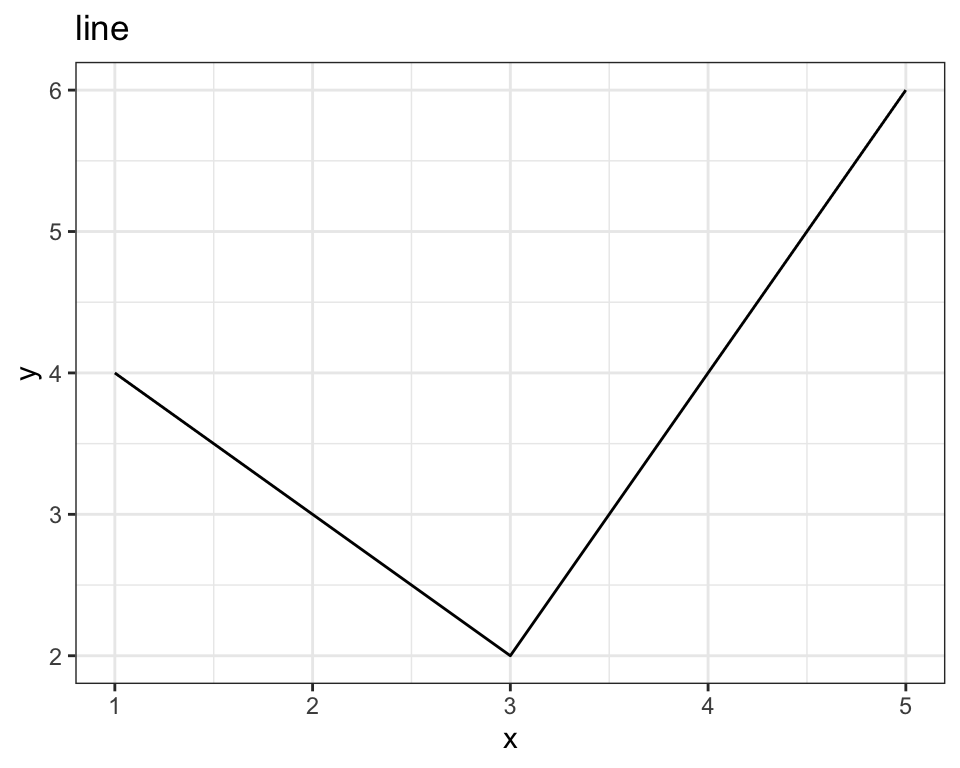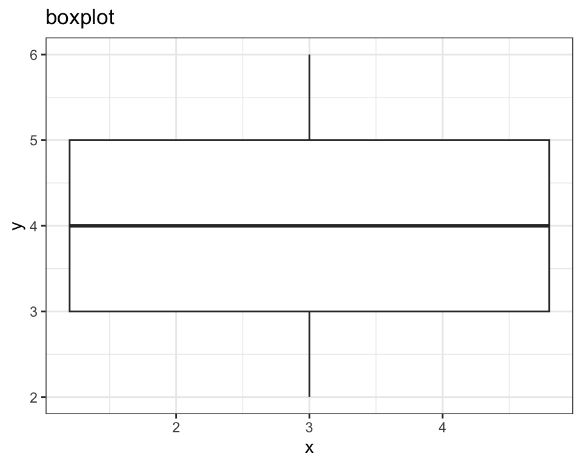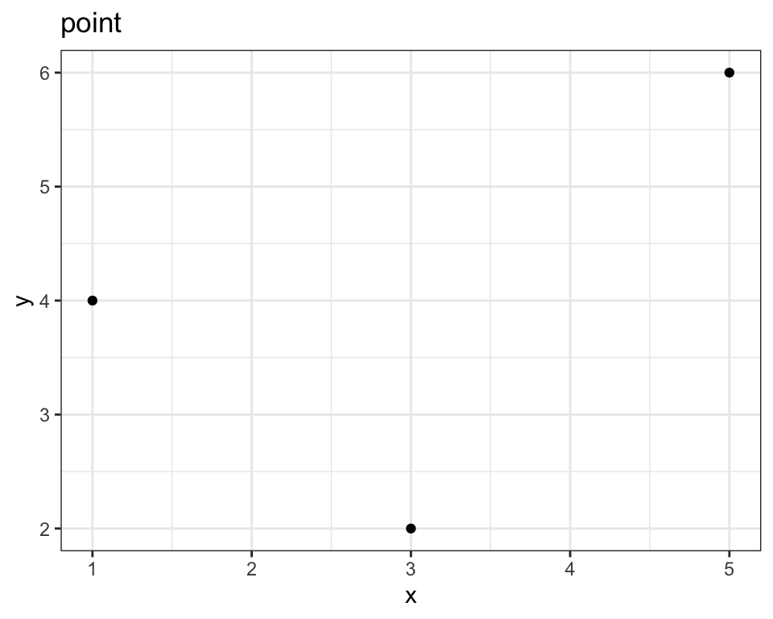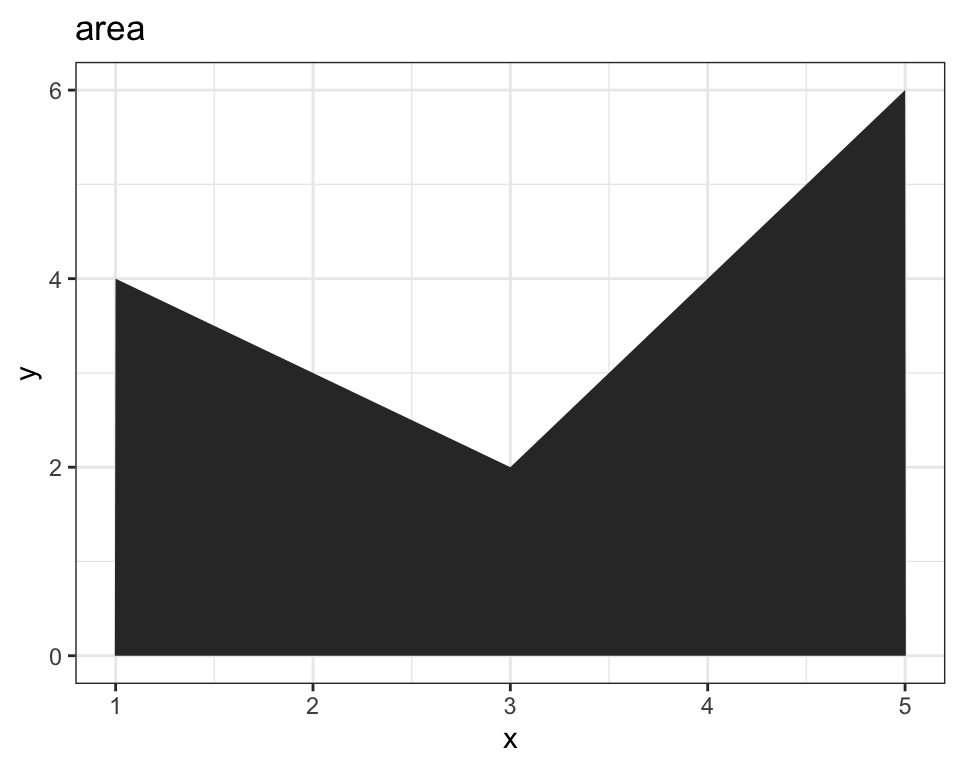
- Earlier in this chapter we used
show.legendwithout explaining it:
What does show.legend = FALSE do here? What happens if you remove it? Try it. 2pts
Ans-2.3.1.2:
# It removes the legend for the geom it's specified in, in this case it removes
# the legend for the smooth lines that are colored based on `drv`. If you
# remove `show.legend`, it will show the legend as show.legend = T is the
# default.
ggplot(mpg, aes(x = displ, y = hwy)) + geom_smooth(aes(color = drv))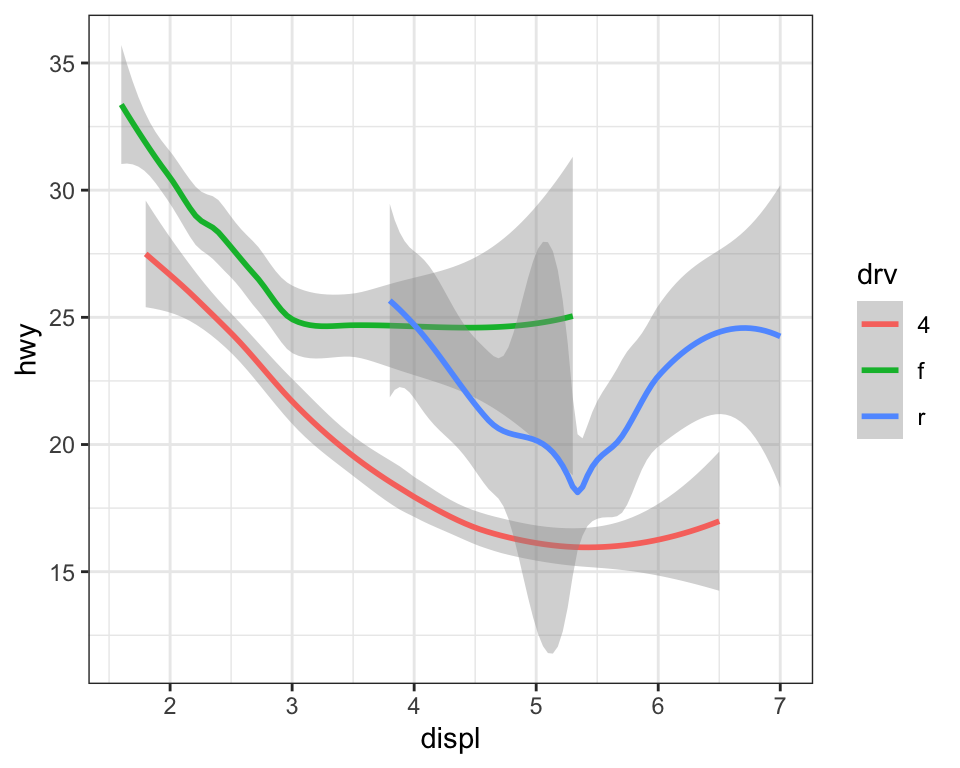
- What does the
seargument togeom_smooth()do? 2pts
Ans-2.3.1.3:
- Recreate the R code necessary to generate and save the following graph 2.2 and arrange them in a figure with 2 columns. Note that wherever a categorical variable is used in the plot, it’s
drv. Use the mathematical notation in one, and the function frompatchwork,plot_layoutin another for laying out the plot. 7pts
![There are six scatterplots in this figure, arranged in a 3x2 grid.
In all plots highway fuel efficiency of cars are on the y-axis and
engine size is on the x-axis. The **first** plot shows all points in black
with a smooth curve overlaid on them. In the **second** plot points are
also all black, with separate smooth curves overlaid for each level of
drive train. On the **third** plot, points and the smooth curves are
represented in different colors for each level of drive train. In the
**fourth** plot the points are represented in different colors for each
level of drive train but there is only a single smooth line fitted to
the whole data. In the **fifth** plot, points are represented in different
colors for each level of drive train, and a separate smooth curve with
line types are fitted to each level of drive train. And
finally in the **sixth** plot points are represented in different colors
for each level of drive train and they have a thick white border.](images/6-plots.png)
Figure 2.2: Six plots arranged in two columns
Ans-2.3.1.4:
p1 <- ggplot(mpg, aes(x = displ, y = hwy)) + geom_point() + geom_smooth(se = FALSE)
p2 <- ggplot(mpg, aes(x = displ, y = hwy)) + geom_smooth(aes(group = drv), se = FALSE) +
geom_point()
p3 <- ggplot(mpg, aes(x = displ, y = hwy, color = drv)) + geom_point() + geom_smooth(se = FALSE)
p4 <- ggplot(mpg, aes(x = displ, y = hwy)) + geom_point(aes(color = drv)) + geom_smooth(se = FALSE)
p5 <- ggplot(mpg, aes(x = displ, y = hwy)) + geom_point(aes(color = drv)) + geom_smooth(aes(linetype = drv),
se = FALSE)
p6 <- ggplot(mpg, aes(x = displ, y = hwy)) + geom_point(size = 4, color = "white") +
geom_point(aes(color = drv))
# Combine the plots
(p1 + p2)/(p3 + p4)/(p5 + p6)
# OR
library(patchwork)
p1 + p2 + p3 + p4 + p5 + p6 + plot_layout(ncol = 2)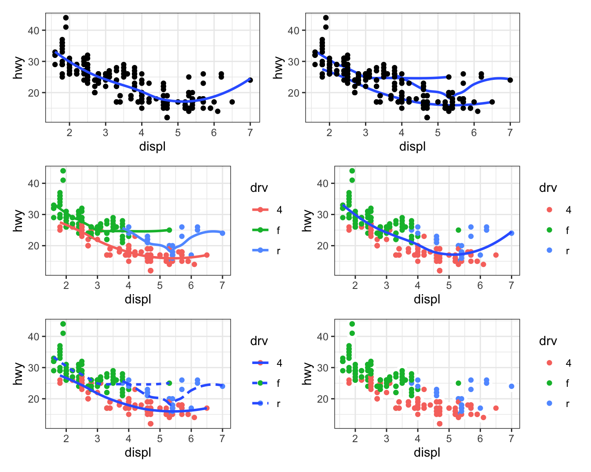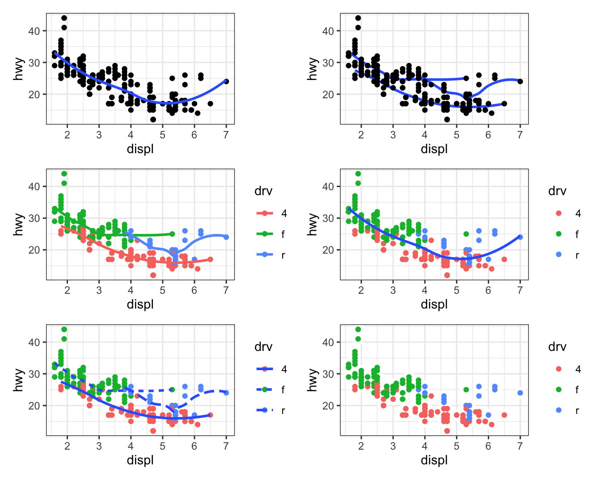
Notice the plots don’t line up as nicely if you don’t use the plot_layout function from patchwork because of the figure legends.
2.4 Facets
Another way, which is particularly useful for categorical variables, is to split your plot into facets, subplots that each display one subset of the data.
To facet your plot by a single variable, use facet_wrap().
The first argument of facet_wrap() is a formula, which you create with ~ followed by a variable name.
The variable that you pass to facet_wrap() should be categorical.
Here “formula” is the name of the thing created by ~, not a synonym for “equation”.
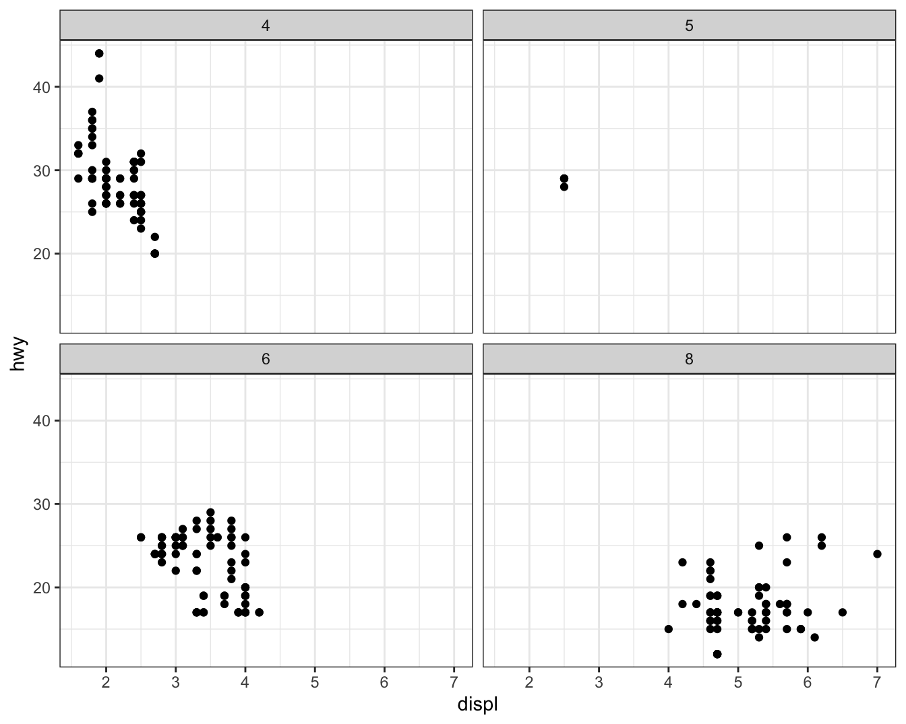
To facet your plot with the combination of two variables, switch from facet_wrap() to facet_grid().
The first argument of facet_grid() is also a formula, but now it’s a double sided formula: rows ~ cols.
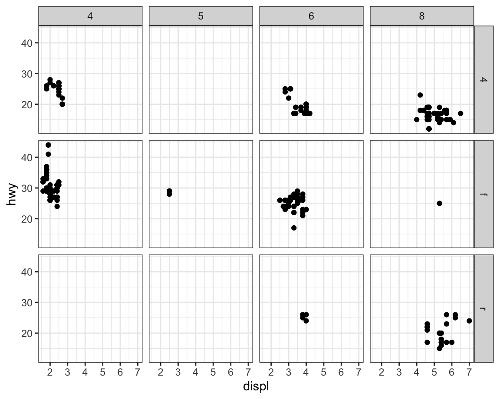
The first argument in facet_grid determines the faceting by column, the second by row.
By default each of the facets share the same scale and range for x and y axes.
This is useful when you want to compare data across facets but it can be limiting when you want to visualize the relationship within each facet better.
Setting the scales argument in a faceting function to "free" will allow for different axis scales across both rows and columns, "free_x" will allow for different scales across rows, and "free_y" will allow for different scales across columns.
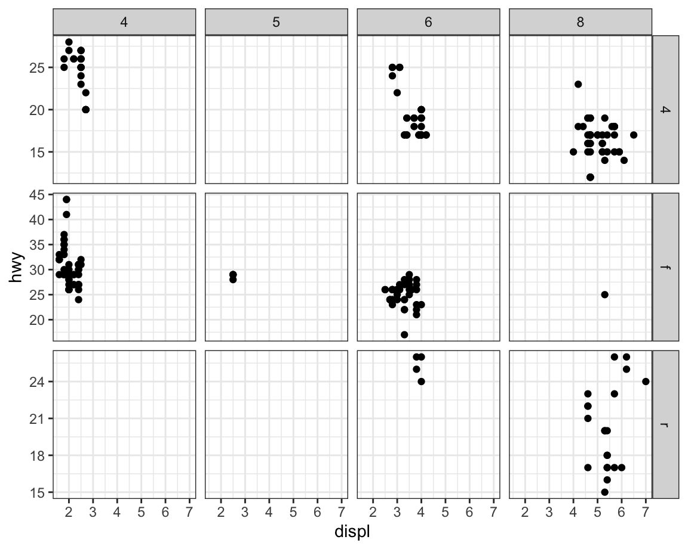
Modifying facet label appearance:
ggplot(mpg, aes(x = displ, y = hwy)) + geom_point() + facet_grid(drv ~ cyl) + theme(strip.text.x = element_text(size = 12,
face = "bold", colour = "blue", angle = 75), strip.text.y = element_text(size = 14,
face = "bold", colour = "red"), strip.background = element_rect(colour = "navy",
fill = "#CCCCFF", linewidth = 2))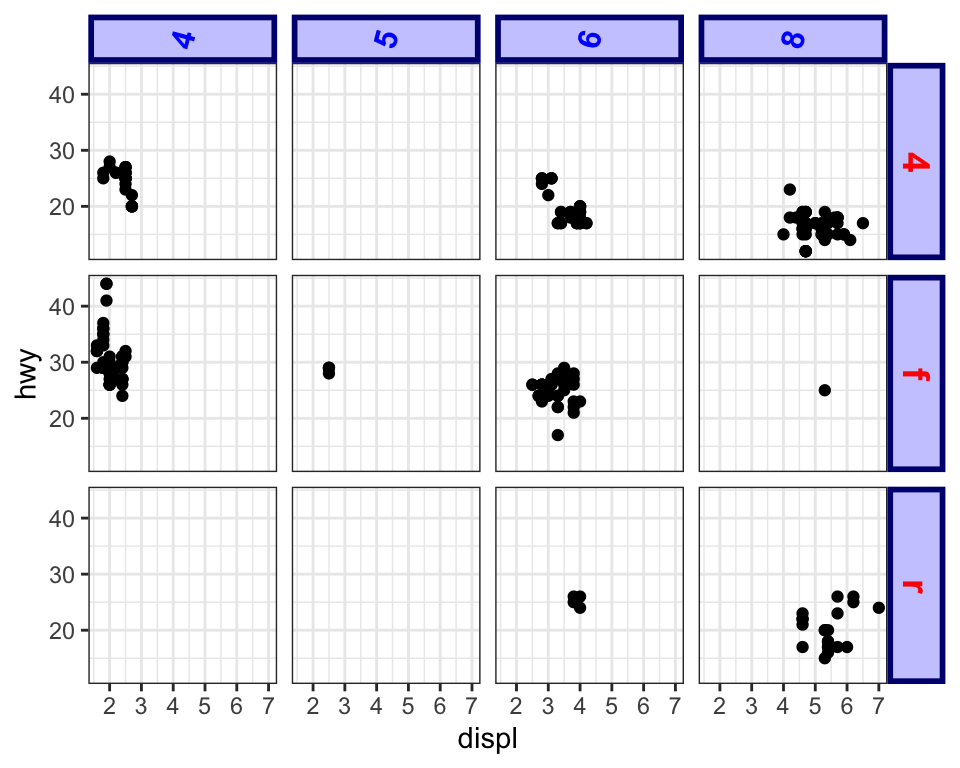
2.4.1 Exercises
- What happens if you facet on a continuous variable? Try it on the. plot below and facet on
hwy. 2pts
Ans-2.4.1.1:
# Faceting by a continuous variable results in one facet per each unique value
# of the continuous variable. We can see this in the scatterplot below of `cyl`
# vs. `drv`, faceted by `hwy`.
ggplot(mpg, aes(x = drv, y = cyl)) + geom_point() + facet_wrap(~hwy)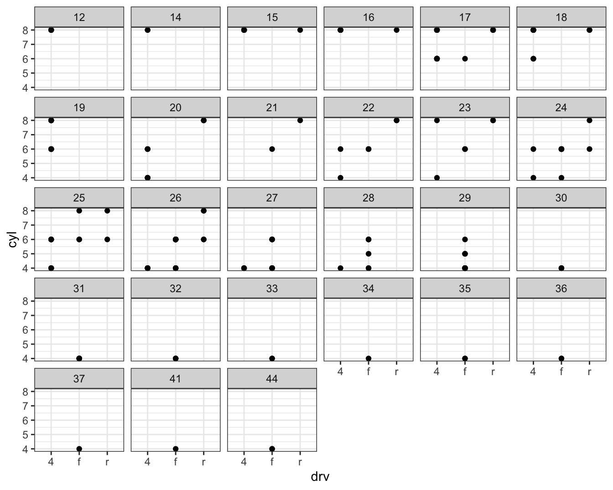
- Run the following code and facet on drv vs cyl. What do the empty cells mean? 2pts
Ans-2.4.1.2:
# There are no cars with rear-wheel drive and 5 cylinders, for example.
# Therefore the facet corresponding to that combination is empty. In general,
# empty facets mean no observations fall in that category.
ggplot(mpg) + geom_point(aes(x = drv, y = cyl)) + facet_grid(drv ~ cyl)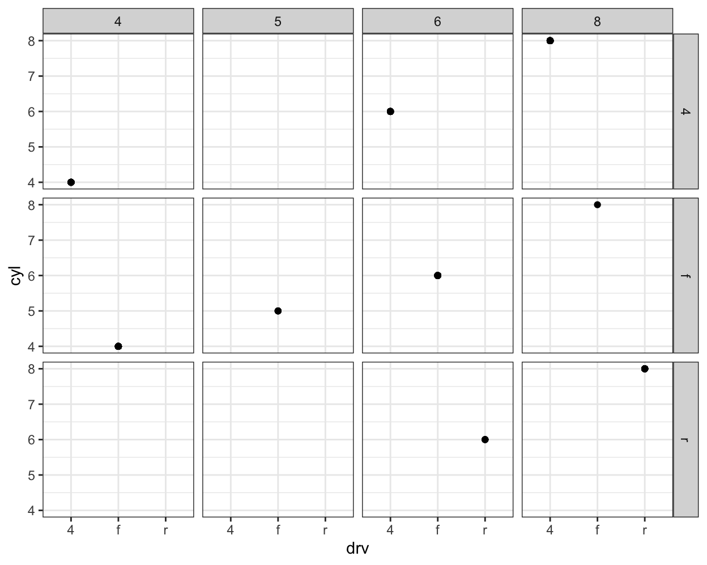
- What plots does the following code make? What does
.do? 2pts
ggplot(mpg) + geom_point(aes(x = displ, y = hwy)) + facet_grid(drv ~ .)
ggplot(mpg) + geom_point(aes(x = displ, y = hwy)) + facet_grid(. ~ cyl)Ans-2.4.1.3:
# In the first plot, with `facet_grid(drv ~ .)`, the period means 'don't facet
# across columns'. In the second plot, with `facet_grid(. ~ drv)`, the period
# means 'don't facet across rows'.
ggplot(mpg) + geom_point(aes(x = displ, y = hwy)) + facet_grid(drv ~ .)
ggplot(mpg) + geom_point(aes(x = displ, y = hwy)) + facet_grid(. ~ cyl)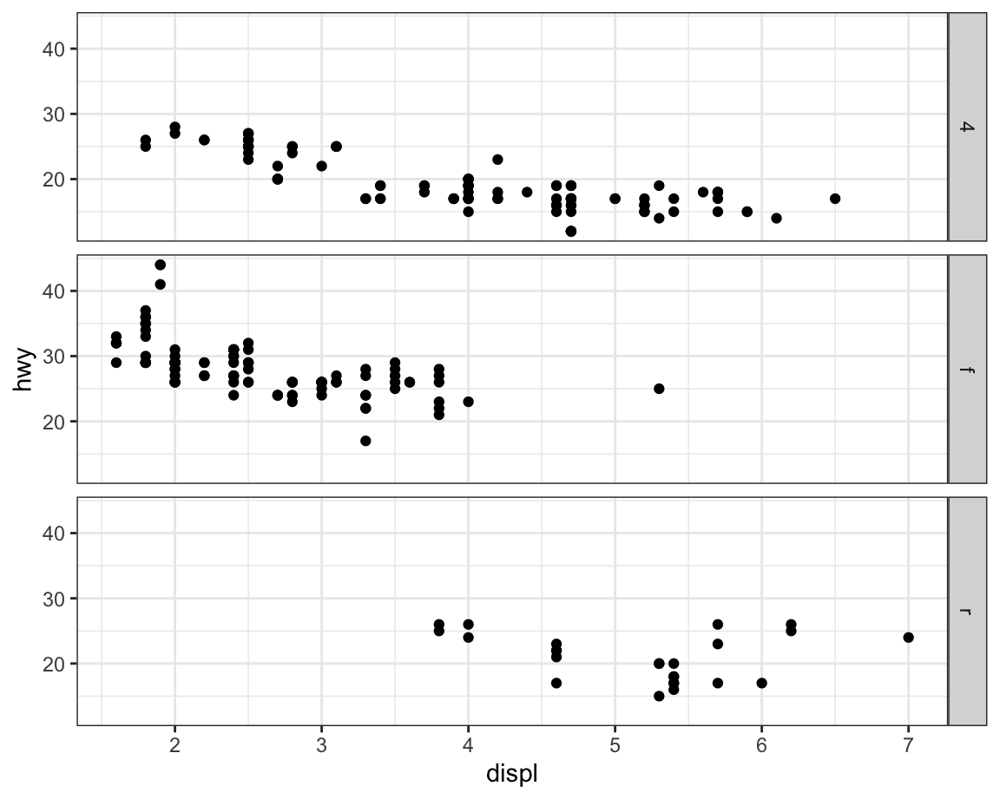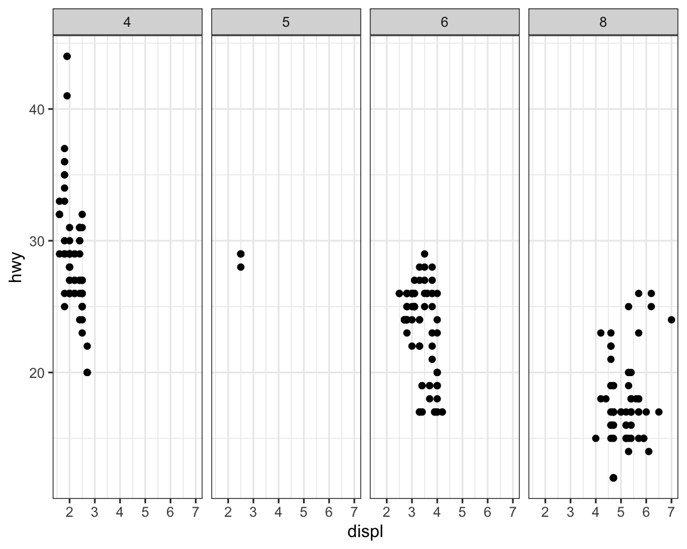
- Take the first faceted plot in this section:
- What are the advantages to using faceting instead of the color aesthetic? What are the disadvantages? 2pts
Ans-2.4.1.4a:
The advantages of faceting is seeing each class of car separately, without
any overplotting. The disadvantage is not being able to compare the classes to
each other as easily when they're in separate plots.Additionally, color can be
helpful for easily telling classes apart. Using both can be helpful, but doesn't
mitigate the issue of easy comparison across classes. If we were interested in
a specific class, e.g. compact cars, it would be useful to highlight that group
only with an additional layer as shown in the last plot below.b) What if you were interested in a specific class, e.g. compact cars? How would you highlight that group using only an additional layer added to the plot below? 2ptsAns-2.4.1.4b:
# | fig.show='hold'
# facet
ggplot(mpg) + geom_point(aes(x = displ, y = hwy)) + facet_wrap(~class, nrow = 2)
# color
ggplot(mpg) + geom_point(aes(x = displ, y = hwy, color = class))
# both
ggplot(mpg) + geom_point(aes(x = displ, y = hwy, color = class), show.legend = FALSE) +
facet_wrap(~class, nrow = 2)
# highlighting
ggplot(mpg, aes(x = displ, y = hwy)) + geom_point(color = "gray") + geom_point(data = mpg %>%
filter(class == "compact"), color = "pink")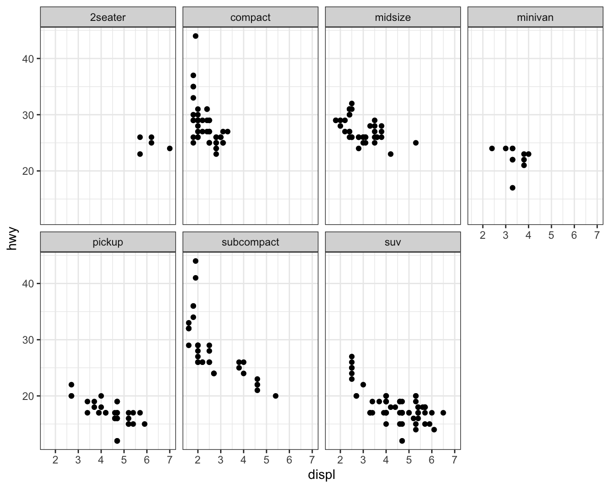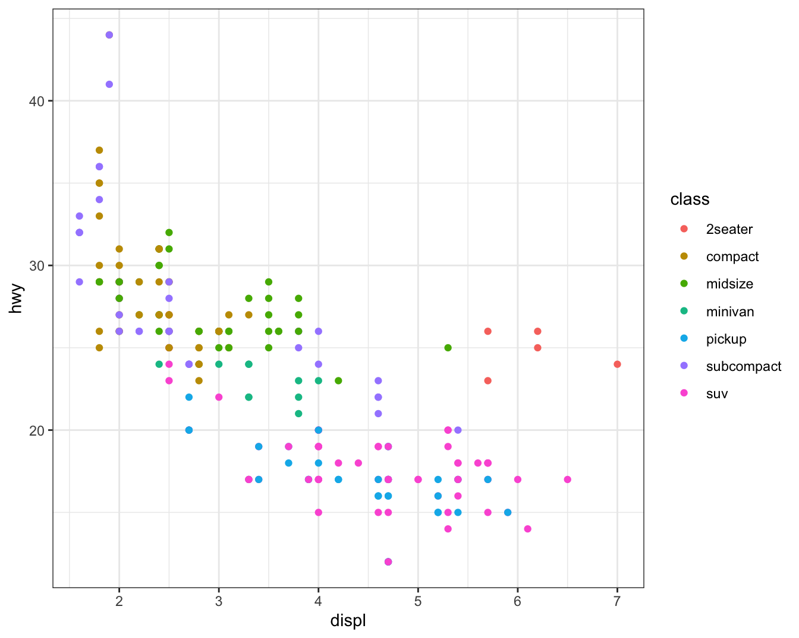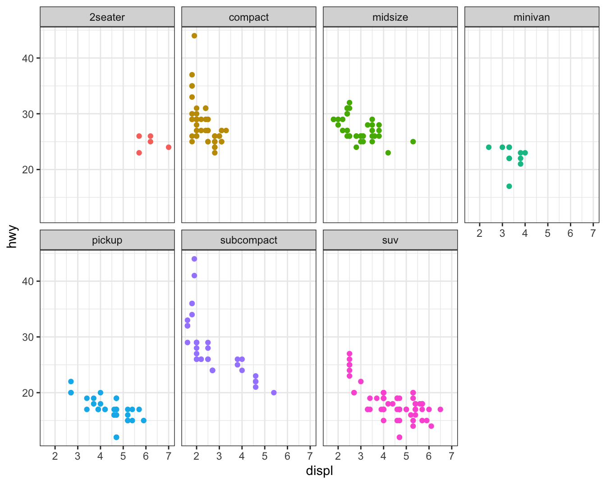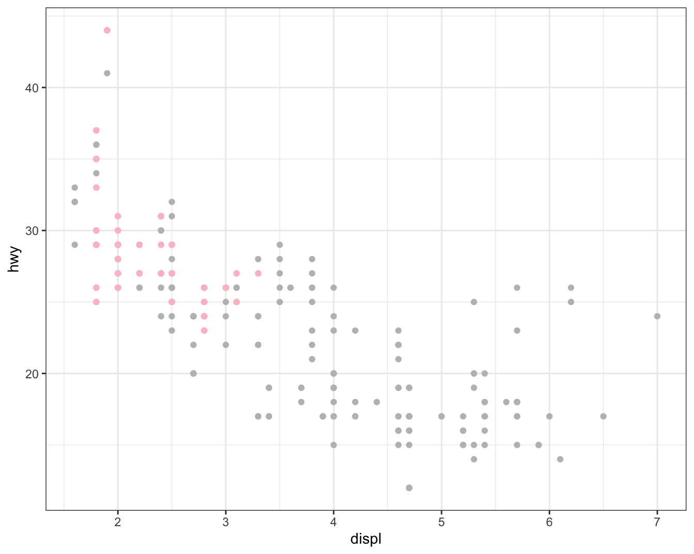
- Read
?facet_wrap. What doesnrowdo? What doesncoldo? What other options control the layout of the individual panels? Why doesn’tfacet_grid()havenrowandncolarguments? 2pts
Ans-2.4.1.5:
`nrow` controls the number panels and `ncol` controls the number of columns
the panels should be arranged in.`facet_grid()` does not have these arguments
because the number of rows and columns are determined by the number of levels of
the two categorical variables. facet_grid()` plots. facet_wrap also has a `dir`
argument which controls the whether the panels should be arranged horizontally
or vertically.- Which of the following plots makes it easier to compare engine size (
displ) across cars with different drive trains? What does this say about when to place a faceting variable across rows or columns? 2pts
ggplot(mpg, aes(x = displ)) + geom_histogram() + facet_grid(drv ~ .)
ggplot(mpg, aes(x = displ)) + geom_histogram() + facet_grid(. ~ drv)Ans-2.4.1.6:
The first plot makes it easier to compare engine size (`displ`) across cars with
different drive trains because the axis that plots `displ` is shared across the
panels. What this says is that if the goal is to make comparisons based on a
given variable, that variable should be placed on the shared axis.- Recreate the following plot using
facet_wrap()instead offacet_grid(). How do the positions of the facet labels change? 2pts

Ans-2.4.1.7:
# The facet labels in `facet_grid` are on the side of each row, in `facet_wrap`
# the labels are on top of each row.
ggplot(mpg) + geom_point(aes(x = displ, y = hwy)) + facet_grid(drv ~ .)<img src=“r4ds-ggplot2_files/figure-html/Ans:2.4.1.7-1.png” width=“=”50%“” style=“display: block; margin: auto;” />
<img src=“r4ds-ggplot2_files/figure-html/Ans:2.4.1.7-2.png” width=“=”50%“” style=“display: block; margin: auto;” />
- Modify the facet label in the following plot so that it has a background color of
navywith aredoutline andwhitetext. 2pts
Ans-2.4.1.8:
ggplot(mpg) + geom_point(aes(x = displ, y = hwy)) + facet_grid(drv ~ .) + theme(strip.text.y = element_text(colour = "white"),
strip.background = element_rect(colour = "red", fill = "navy", linewidth = 2))<img src=“r4ds-ggplot2_files/figure-html/Ans-2.4.1.8-1.png” width=“=”80%“” style=“display: block; margin: auto;” />
2.5 Statistical transformations
Consider a basic bar chart, drawn with geom_bar() or geom_col().
The following chart displays the total number of diamonds in the diamonds dataset, grouped by cut.
The diamonds dataset is in the ggplot2 package and contains information on ~54,000 diamonds, including the price, carat, color, clarity, and cut of each diamond.
The chart shows that more diamonds are available with high quality cuts than with low quality cuts.
On the x-axis, the chart displays cut, a variable from diamonds.
On the y-axis, it displays count, but count is not a variable in diamonds!
Where does count come from?
Many graphs, like scatterplots, plot the raw values of your dataset.
Other graphs, like bar charts, calculate new values to plot:
Bar charts, histograms, and frequency polygons bin your data and then plot bin counts, the number of points that fall in each bin.
Smoothers fit a model to your data and then plot predictions from the model.
Boxplots compute the five-number summary of the distribution and then display that summary as a specially formatted box.
The algorithm used to calculate new values for a graph is called a stat, short for statistical transformation.
2.3 shows how this process works with geom_bar().

Figure 2.3: When creating a bar chart we first start with the raw data, then aggregate it to count the number of observations in each bar, and finally map those computed variables to plot aesthetics.
You can learn which stat a geom uses by inspecting the default value for the stat argument.
For example, ?geom_bar shows that the default value for stat is “count”, which means that geom_bar() uses stat_count().
stat_count() is documented on the same page as geom_bar().
If you scroll down, the section called “Computed variables” explains that it computes two new variables: count and prop.
Every geom has a default stat; and every stat has a default geom. This means that you can typically use geoms without worrying about the underlying statistical transformation. However, there are three reasons why you might need to use a stat explicitly:
- You might want to override the default stat. In the code below, we change the stat of
geom_bar()from count (the default) to identity.This lets us map the height of the bars to the raw values of a y variable.
# | Bar chart of number of each cut of diamond. There are roughly 1500 Fair,
# 5000 Good, 12000 Very Good, 14000 Premium, and 22000 Ideal cut diamonds.
diamonds %>%
count(cut) %>%
ggplot(aes(x = cut, y = n)) + geom_bar(stat = "identity")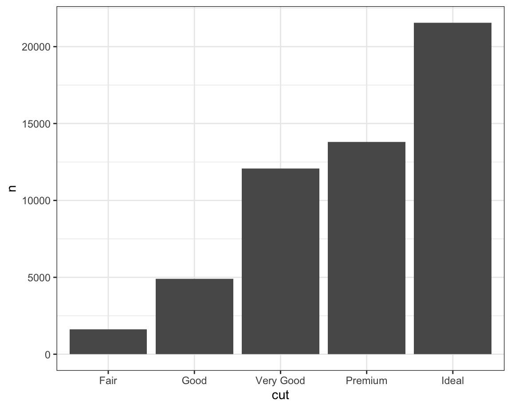
- You might want to override the default mapping from transformed variables to aesthetics. For example, you might want to display a bar chart of proportions, rather than counts:
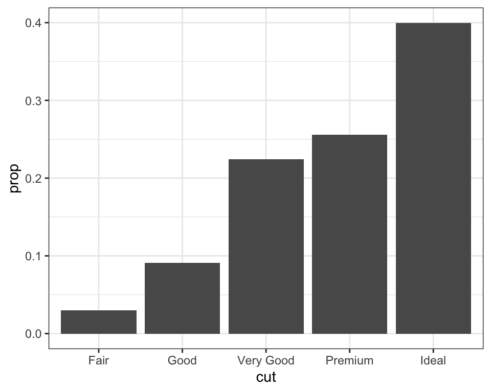
To find the possible variables that can be computed by the stat, look for the section titled “computed variables” in the help for geom_bar().
- You might want to draw greater attention to the statistical transformation in your code. For example, you might use
stat_summary(), which summarizes the y values for each unique x value, to draw attention to the summary that you’re computing:
ggplot(diamonds) + stat_summary(aes(x = cut, y = depth), fun.min = min, fun.max = max,
fun = median)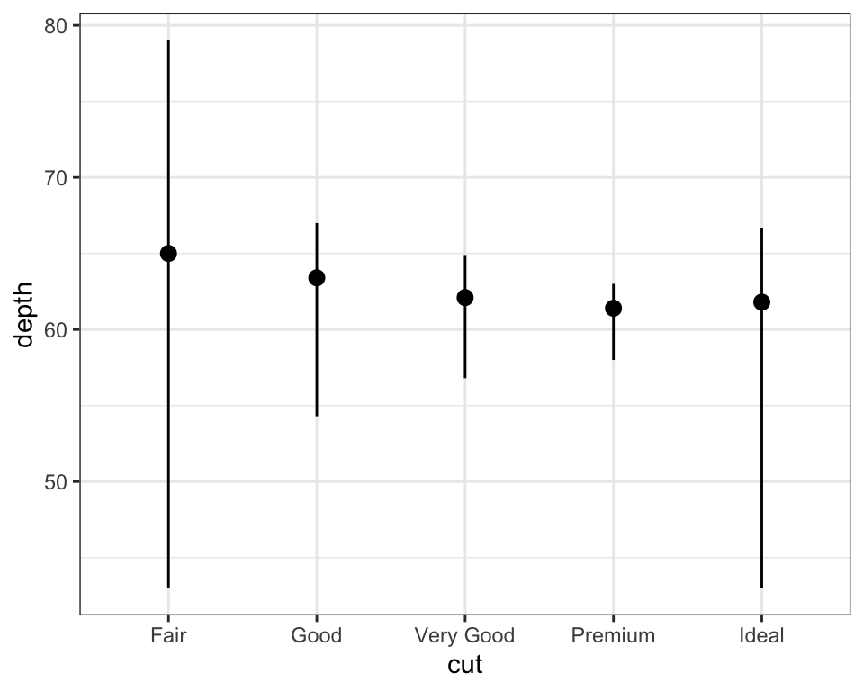
ggplot2 provides more than 20 stats for you to use.
Each stat is a function, so you can get help in the usual way, e.g., ?stat_bin.
2.5.1 Exercises
- What is the default geom associated with
stat_summary()? How could you rewrite the previous plot to use that geom function instead of the stat function? 2pts
Ans-2.5.1.1:
# The default geom of stat summary is `geom_pointrange()`.The plot can be
# recreated as follows.
diamonds %>%
group_by(cut) %>%
dplyr::summarize(lower = min(depth), upper = max(depth), midpoint = median(depth)) %>%
ggplot(aes(x = cut, y = midpoint)) + geom_pointrange(aes(ymin = lower, ymax = upper))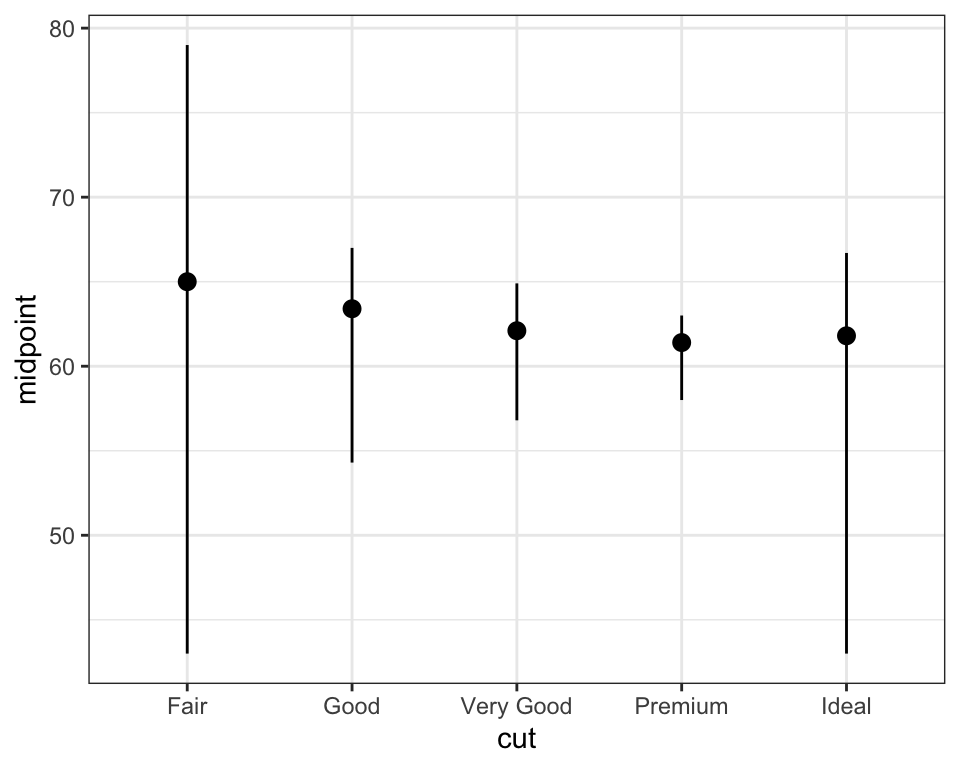
- What does
geom_col()do? How is it different fromgeom_bar()? 2pts
- What does
Ans-2.5.1.2a:
`geom_bar()` uses stat_count() by default: it counts the number of the number
of occurrences for each x value or category. It doesn't expect a y-value, since
it's going to count that up itself. 'geom_col' is the same as geom_bar(stat =
'identity'), so if your data contains groups x and the count for each group y,
you can just use this function instead. `geom_col()` can be used to make a bar
plot from a data frame that represents a frequency table, while `geom_bar()` can
be used to make a bar plot from a data frame where each row is an observation.b) Plot mpg and count the classes in drv. Compare `geom_bar` to `geom_col`. 2ptsAns-2.5.1.2b:
ggplot(mpg) + geom_bar(aes(fill = drv, x = class))
# OR
ggplot(mpg) + geom_bar(aes(fill = drv, x = class), position = "dodge")
# `geom_col`
mpg %>%
group_by(class, .drop = FALSE) %>%
add_tally() %>%
ungroup() %>%
ggplot(aes(fill = drv, x = class, y = n)) + geom_col()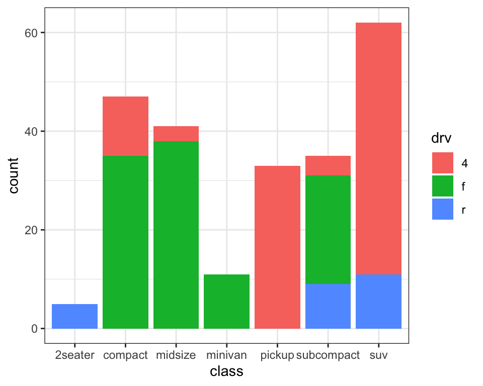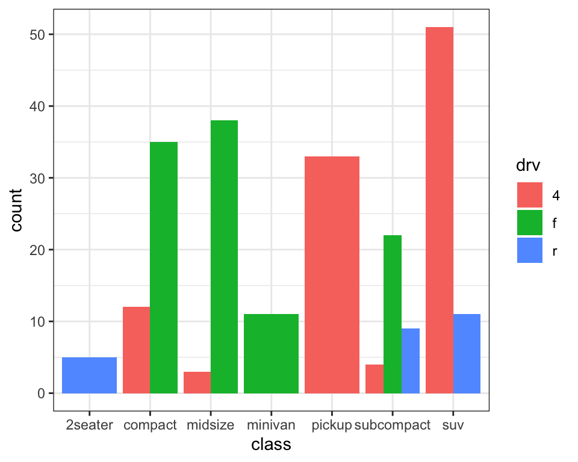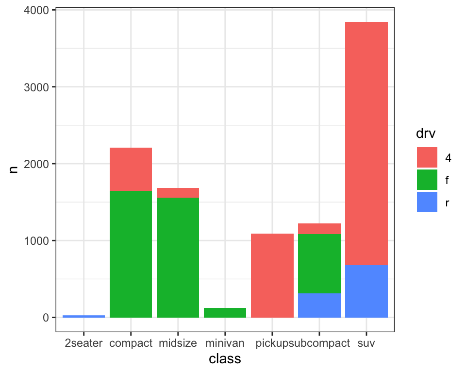
- Most geoms and stats come in pairs that are almost always used in concert. Make a list of all the pairs. What do they have in common? (Hint: Read through the documentation.). Write the stat used for
geom_bar(),geom_smooth()andgeom_boxplot(). 3pts
Ans-2.5.1.3:
Geoms and stats that are almost always used in concert are listed below:
| **geom** | **stat** |
|-------------------------|-------------------------|
| `geom_bar()` | `stat_count()` |
| `geom_bin2d()` | `stat_bin_2d()` |
| `geom_boxplot()` | `stat_boxplot()` |
| `geom_count()` | `stat_sum()` |
| `geom_density()` | `stat_density()` |
| `geom_dotplot()` | `stat_bindot()` |
| `geom_function()` | `stat_function()` |
| `geom_smooth()` | `stat_smooth()` |
| `geom_violin()` | `stat_ydensity()` |
| `geom_hex()` | `stat_bin_hex()` |
| `geom_quantile()` | `stat_quantile()` |- What variables does
stat_smooth()compute? What arguments control its behavior? 2pts
Ans-2.5.1.4:
- In our proportion bar chart, we needed to set
group = 1. Why? In other words, what is the problem with this graph? Replot using agroupvariable so that it plots correctly.
- In our proportion bar chart, we needed to set
Ans-2.5.1.5a:
b) Replot the plot below without using a `group` aesthetic. Instead of using `after_stat(prop)` to calculate proportions use `after_stat(count)`. Label the y-axis using percentages. Hint: check out the scales package that we loaded.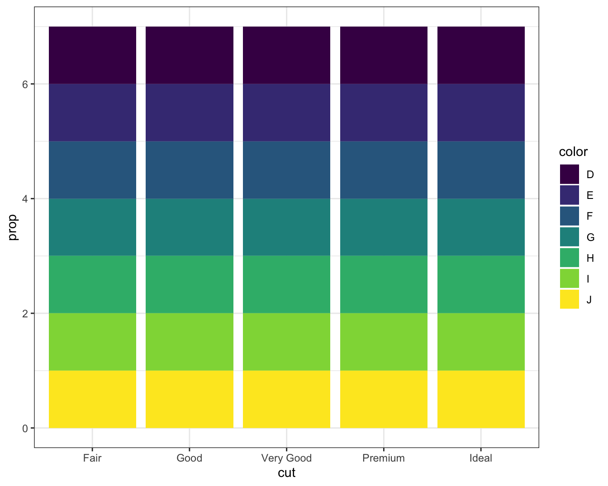
Ans-2.5.1.5b:
- In our proportion bar chart, we needed to set
group = 1. Why? In other words, what is the problem with these two graphs? Replot the two plots below using agroupvariable so that it plots correctly. 2pts
- In our proportion bar chart, we needed to set
I mistakenly said:Replot the two plots below using group = 1.
Ans-2.5.1.5a:
# The problem with this plot is that the proportions are calculated by geom_bar
# within the cut categories so they will be equal to 1 (ie: what proportion of
# “Fair” is in “Fair”). By forcing the group to be 1, the proper proportions as
# part of the total number of observations will be displayed.
# Setting `group = 1` results in the correct proportions of `cut`s being
# plotted.
ggplot(diamonds, aes(x = cut, y = after_stat(prop), group = 1)) + geom_bar()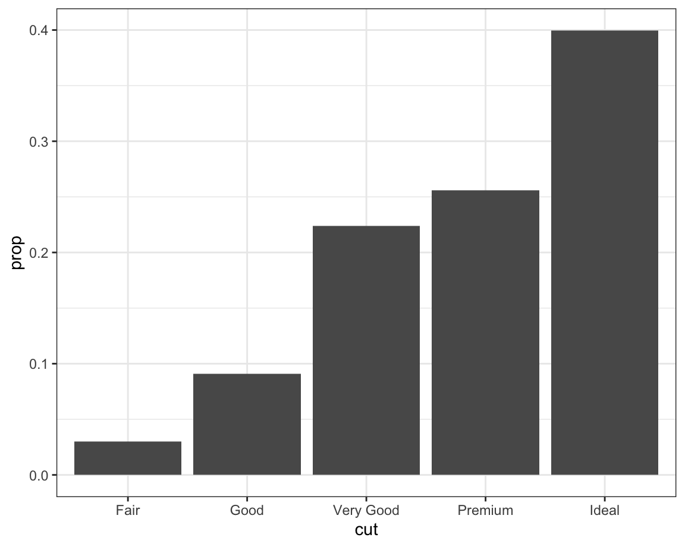
- Replot the plot below without using a
groupaesthetic. Instead of usingafter_stat(prop)to calculate proportions useafter_stat(count). Label the y-axis using percentages. Hint: check out the scales package that we loaded.
- Replot the plot below without using a

2.6 Position adjustments
There’s one more piece of magic associated with bar charts.
You can color a bar chart using either the color aesthetic, or, more usefully, the fill aesthetic:
# Top
ggplot(mpg, aes(x = drv, color = drv)) + geom_bar()
# Bottom
ggplot(mpg, aes(x = drv, fill = drv)) + geom_bar()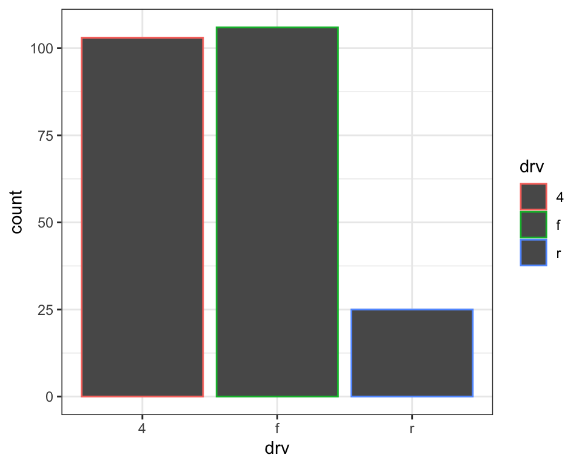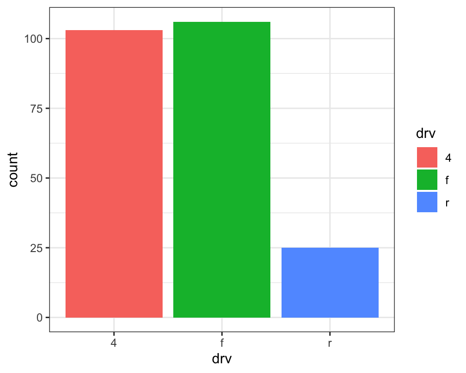
Note what happens if you map the fill aesthetic to another variable, like class: the bars are automatically stacked.
Each colored rectangle represents a combination of drv and class.

The stacking is performed automatically using the position adjustment specified by the position argument.
If you don’t want a stacked bar chart, you can use one of three other options: "identity", "dodge" or "fill".
position = "identity"will place each object exactly where it falls in the context of the graph. This is not very useful for bars, because it overlaps them. To see that overlapping we either need to make the bars slightly transparent by settingalphato a small value, or completely transparent by settingfill = NA.
# Top
ggplot(mpg, aes(x = drv, fill = class)) + geom_bar(alpha = 1/5, position = "identity")
# Bottom
ggplot(mpg, aes(x = drv, color = class)) + geom_bar(fill = NA, position = "identity")

The identity position adjustment is more useful for 2d geoms, like points, where it is the default.position = "fill"works like stacking, but makes each set of stacked bars the same height. This makes it easier to compare proportions across groups.position = "dodge"places overlapping objects directly beside one another. This makes it easier to compare individual values.
ggplot(mpg, aes(x = drv, fill = class)) + geom_bar(position = "fill")
ggplot(mpg, aes(x = drv, fill = class)) + geom_bar(position = "dodge")![In the first plot, segmented bar chart of drive types of cars, where each bar is
filled with colors for the levels of class. Height of each bar is 1 and
heights of the colored segments represent the proportions of cars
with a given class level within a given drive type.
In the second plot, dodged bar chart of drive types of cars. Dodged bars are
grouped by levels of drive type. Within each group bars represent each
level of class. Some classes are represented within some drive types and
not represented in others, resulting in unequal number of bars within each
group. Heights of these bars represent the number of cars with a given
level of drive type and class.](r4ds-ggplot2_files/figure-html/unnamed-chunk-103-1.png)
![In the first plot, segmented bar chart of drive types of cars, where each bar is
filled with colors for the levels of class. Height of each bar is 1 and
heights of the colored segments represent the proportions of cars
with a given class level within a given drive type.
In the second plot, dodged bar chart of drive types of cars. Dodged bars are
grouped by levels of drive type. Within each group bars represent each
level of class. Some classes are represented within some drive types and
not represented in others, resulting in unequal number of bars within each
group. Heights of these bars represent the number of cars with a given
level of drive type and class.](r4ds-ggplot2_files/figure-html/unnamed-chunk-103-2.png)
There’s one other type of adjustment that’s not useful for bar charts, but can be very useful for scatterplots. Recall our first scatterplot. Did you notice that the plot displays only 126 points, even though there are 234 observations in the dataset?
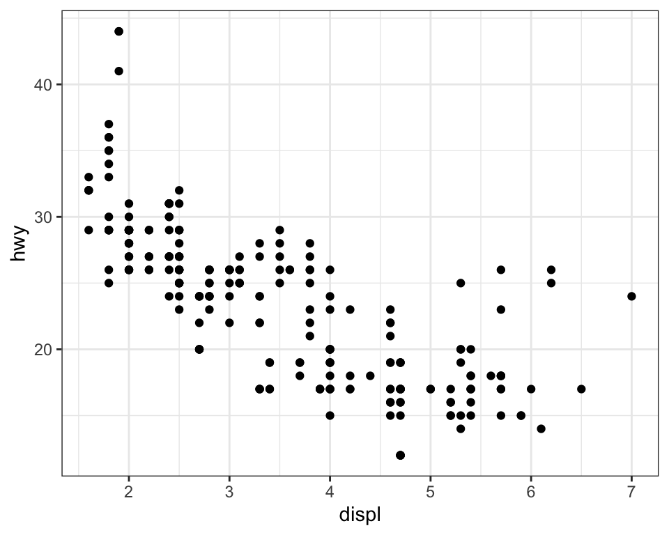
The underlying values of hwy and displ are rounded so the points appear on a grid and many points overlap each other.
This problem is known as overplotting.
This arrangement makes it difficult to see the distribution of the data.
Are the data points spread equally throughout the graph, or is there one special combination of hwy and displ that contains 109 values?
You can avoid this gridding by setting the position adjustment to “jitter”.
position = "jitter" adds a small amount of random noise to each point.
This spreads the points out because no two points are likely to receive the same amount of random noise.
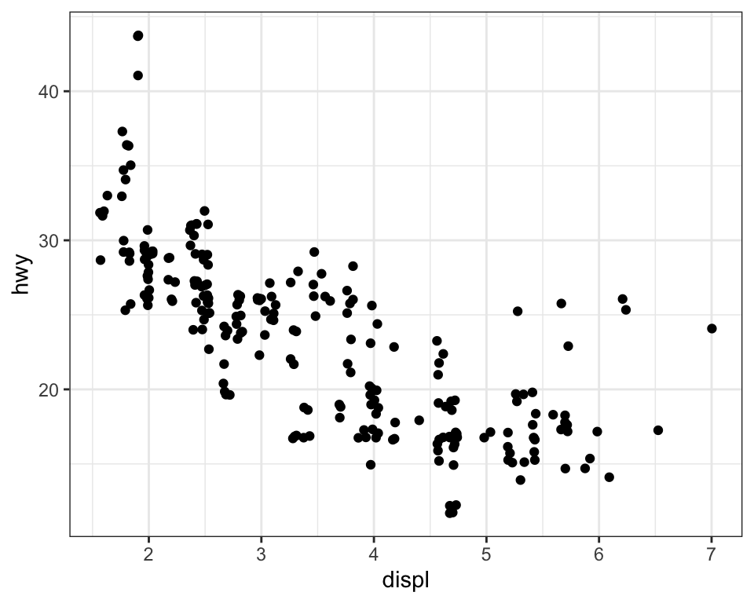
Adding randomness seems like a strange way to improve your plot, but while it makes your graph less accurate at small scales, it makes your graph more revealing at large scales.
Because this is such a useful operation, ggplot2 comes with a shorthand for geom_point(position = "jitter"): geom_jitter().
To learn more about a position adjustment, look up the help page associated with each adjustment: ?position_dodge, ?position_fill, ?position_identity, ?position_jitter, and ?position_stack.
2.6.1 Exercises
- What is the problem with the following plot? How could you improve it? 2pts
Ans-2.6.1.1:
- What, if anything, is the difference between these two plots? Why? 2pts
ggplot(mpg, aes(x = displ, y = hwy)) + geom_point()
ggplot(mpg, aes(x = displ, y = hwy)) + geom_point(position = "identity")- What parameters to
geom_jitter()control the amount of jittering? Add jittering to the following plot: 2pts
Ans-2.6.1.3:
# The `width` and `height` parameters control the amount of horizontal and
# vertical displacement, recpectively. Higher values mean more displacement. In
# the plot below you can see the non-jittered points in pink and the jittered
# points in black.
ggplot(mpg, aes(x = displ, y = hwy)) + geom_point(color = "pink") + geom_jitter(height = 1,
width = 1) | ggplot(mpg, aes(x = displ, y = hwy)) + geom_point(color = "pink") +
geom_jitter(height = 1, width = 5) | ggplot(mpg, aes(x = displ, y = hwy)) + geom_point(color = "pink") +
geom_jitter(height = 5, width = 100)- Compare and contrast
geom_jitter()withgeom_count()using the following ggplot. 2pts
Ans-2.6.1.4:
- What’s the default position adjustment for
geom_boxplot()? Create a visualization of thempgdataset that demonstrates it by adding the default position using the following ggplot: 2pts
2.7 Grammar of graphics
We can expand on the graphing template you’ve learned by adding position adjustments, stats, coordinate systems, and faceting:
ggplot(data = <DATA>) +
<GEOM_FUNCTION>(
mapping = aes(<MAPPINGS>),
stat = <STAT>,
position = <POSITION>
) +
<COORDINATE_FUNCTION> +
<FACET_FUNCTION>Our new template takes seven parameters, the bracketed words that appear in the template. In practice, you rarely need to supply all seven parameters to make a graph because ggplot2 will provide useful defaults for everything except the data, the mappings, and the geom function.
The seven parameters in the template compose the grammar of graphics, a formal system for building plots. The grammar of graphics is based on the insight that you can uniquely describe any plot as a combination of a dataset, a geom, a set of mappings, a stat, a position adjustment, a coordinate system, a faceting scheme, and a theme.
To see how this works, consider how you could build a basic plot from scratch: you could start with a dataset and then transform it into the information that you want to display (with a stat). Next, you could choose a geometric object to represent each observation in the transformed data. You could then use the aesthetic properties of the geoms to represent variables in the data. You would map the values of each variable to the levels of an aesthetic. These steps are illustrated in 2.4. You’d then select a coordinate system to place the geoms into, using the location of the objects (which is itself an aesthetic property) to display the values of the x and y variables.

Figure 2.4: Steps for going from raw data to a table of frequencies to a bar plot where the heights of the bar represent the frequencies.
At this point, you would have a complete graph, but you could further adjust the positions of the geoms within the coordinate system (a position adjustment) or split the graph into subplots (faceting). You could also extend the plot by adding one or more additional layers, where each additional layer uses a dataset, a geom, a set of mappings, a stat, and a position adjustment.
You could use this method to build any plot that you imagine. In other words, you can use the code template that you’ve learned in this chapter to build hundreds of thousands of unique plots.
If you’d like to learn more about the theoretical underpinnings of ggplot2, you might enjoy reading “The Layered Grammar of Graphics”, the scientific paper that describes the theory of ggplot2 in detail.
2.8 Summary
In this chapter you learned about the layered grammar of graphics starting with aesthetics and geometries to build a simple plot, facets for splitting the plot into subsets, statistics for understanding how geoms are calculated, position adjustments for controlling the fine details of position when geoms might otherwise overlap, and coordinate systems which allow you to fundamentally change what x and y mean.
Two very useful resources for getting an overview of the complete ggplot2 functionality are the ggplot2 cheatsheet (which you can find at https://posit.co/resources/cheatsheets) and the ggplot2 package website (https://ggplot2.tidyverse.org).
An important lesson you should take from this chapter is that when you feel the need for a geom that is not provided by ggplot2, it’s always a good idea to look into whether someone else has already solved your problem by creating a ggplot2 extension package that offers that geom.